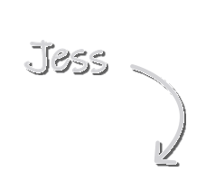

Interfaces people don't have to think about.
Thoughtful design with aesthetic clarity to create functional, intuitive and visually engaging experiences, from research to handoff.
Thoughtful design with aesthetic clarity to create functional, intuitive and visually engaging experiences, from research to handoff.
01 How I work
Align on the problem, the people, the constraints and what "success" will be measured by.
02 How I work
Learn from real users and the market before drawing a single screen.
03 How I work
Turn findings into structure: who we're designing for and how the product is organised.
04 How I work
From low-fidelity sketches to a high-fidelity UI backed by a component system.
05 How I work
Test with users, measure, and fix what matters most before anything gets built.
06 How I work
Hand off with specs, tokens and annotations, then follow the numbers after launch.
Tell me about it! Communication and close collaboration with clients are essential to my process, so you'll always know what I'm designing, why, and what I need from you next.
I treated my own site as a client project: a paper-and-ink palette with sticky-note accents, a 4pt spacing scale, accessible components, a wireframe-inspired annotation language and a full write-up of the UI/UX process I follow.
Read the guidelinesMuvr is an existing app going through a complete revamp. This is my contribution on the customer app redesign while on the team.
View caseInterface design paired with an illustration language built in Illustrator and Procreate, so product screens and brand communication speak with one voice.
View caseCrypex is an ongoing platform going through a complete revamp. This is my contribution on the customer app redesign while on the team.
View caseHeuristic review, analytics read-out and user interviews to find what's actually blocking your users.
Output → findings report · prioritised fixesFrom discovery to handoff for a new product or a major feature: flows, wireframes, UI, prototype, testing.
Output → Figma file · prototype · specsTokens, components with every state, usage docs and a governance model your team can keep alive.
Output → library · tokens · guidelinesInteractive prototypes tested with real users, with clear metrics and a plan for the next iteration.
Output → test report · SUS / SEQ · iteration plan
nice to meet you
I'm a UI/UX designer with over five years of experience, passionate about experiences that are clear, functional and genuinely easy to use.
I work in Figma every day and bring illustration from Illustrator and Procreate when a product needs a visual voice of its own.
at the heart of it all…“Good design stands on your side,
never in your way.”
My path began with colors and lines, sharpening my eye for balance, detail, and possibility. That foundation grew into a love for digital design, crafting experiences that feel intuitive, thoughtful, and alive.
Freelancing turned the world into my office. New teams brought fresh rhythms, new cultures sparked new perspectives, and every project pushed me to grow. It kept me on my toes and taught me to adapt quickly, stay curious, and design with empathy.
Let's transform ideas into functional and engaging designs. Have a product, a feature or a messy flow?
Tell me about it.